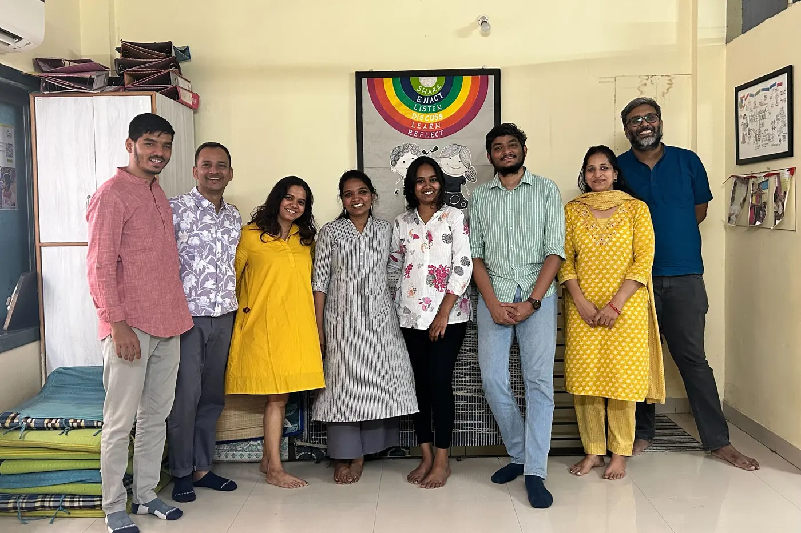
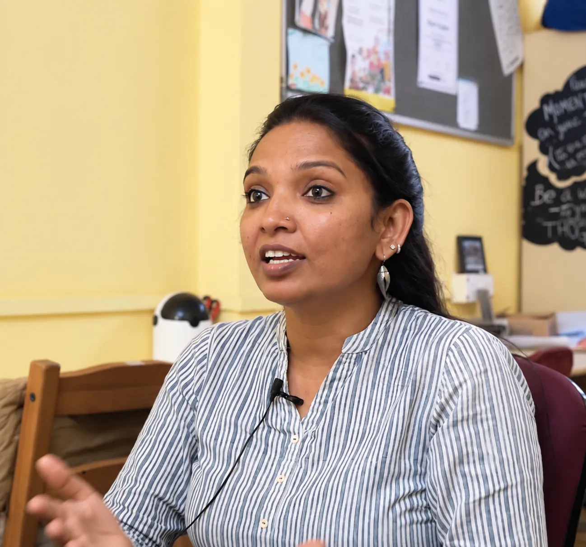

EducationIdentifying key metrics
Apni Shala Foundation
A handful of hero metrics on the weekly dashboard helped Apni Shala quickly identify student learning gaps that used to surface only at year-end previously.
We end up capturing a lot of data, but it’s the first time we’ve stepped back to think of what are the key findings we really want our data to shed light on as an organisation. We are now at a place to be making less emotional, and more data-driven decisions.”

Sangeeta Zombade · Apni Shala Foundation